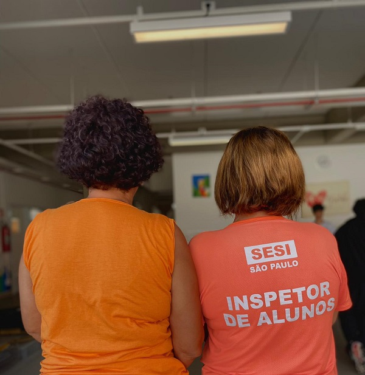

<!DOCTYPE html>
<html lang="en">
<head>
    <meta charset="UTF-8">
    <meta http-equiv="X-UA-Compatible" content="IE=edge">
    <meta name="viewport" content="width=device-width, initial-scale=1.0">
    <title>Document</title>
    <link rel= stylesheet href="estilos.css">


</head>
<body>
    
</body>
</html>


</head>
<body class="julia"></body>

 
    <h1><font color  >Mulheres que transformam...</h1> 
<nav>
<ul>
    
    <color:black></color:black>
</head>
 <p>Nas últimas décadas as mulheres conquistaram um espaço importante 
        no mercado de trabalho brasileiro, mas muitos desafios ainda estão presentes.
         Isso porque a discriminação ainda é existente e a igualdade não faz parte da realidade da 
         maioria dos espaços.
         De acordo com dados da Organização Internacional do Trabalho (OIT), a economia brasileira poderia 
         aumentar em até 382
         bilhões de reais se incluísse mais mulheres no mercado até 2025.</P>
         <h1><font color  >Trabalho das mulheres: estatísticas de um mercado desigual</h1> 
           
           <table>
            <tr>
                <td></td>
                <td><p>Com o passar dos anos, a presença feminina no mercado de trabalho brasileiro, passou de 56,1% em 1992 para 61,6% em 2015, com projeção para atingir 64,3% no ano de 2030, de acordo com os dados do IPEA (2019). 
    <p>Enquanto isso, o mesmo estudo indica que a taxa de participação masculina no mercado de trabalho tende a cair, projetando que em 2030 ela será de 82,7%, inferior aos 89,6% observados em 1992. </p>

   <p> No entanto, apesar do maior número de mulheres trabalhando por aqui, esses mesmos dados indicam que há uma grande disparidade entre a participação dos homens e das mulheres no mercado de trabalho. </p>
    De acordo com o relatório Global Gender Gap Report (Relatório Global sobre a Lacuna de Gênero) de 2020, do Fórum Econômico Mundial, o Brasil figura a 130° posição em relação à igualdade salarial entre homens e mulheres que exercem funções semelhantes, em um ranking contendo 153 países. 
   <p> No que se refere à questão da representatividade, um estudo divulgado pelo IBGE evidencia que as mulheres são sub-representadas em várias áreas, como na política e também nos cargos gerenciais. </p>
    Conforme dados do IBGE (2019), atualmente uma mulher negra recebe em média cerca de 44,4% de renda média dos homens brancos, que estão no topo da escala de remuneração no Brasil.</p>    
        <p></p></td>
    </tr>
    </table>
    <h1><font color  >Mulheres na educação</h1> 
        <table>
            <tr>

            </tr>
        
        <td></td>

        <td><p>Quando foram criadas as primeiras escolas
            no Brasil pelos jesuítas durante o período colonial, elas eram
            somente para meninos e homens da elite. Após a independência
            do Brasil (1822), com uma lei de 1827, é reconhecido o direito das
            meninas na escola. Começaram a surgir escolas femininas que,
            além de serem separadas das masculinas, tinham características
            diferentes. Para as meninas, o foco era prepará-las para cuidar
            da casa e da família, e conteúdos, como a matemática, eram
            reduzidos.  </p>

        <p>É preciso lembrar que ainda assim esse direito não era para
            todas as meninas: durante a maior parte da nossa história, a
            maioria da população – que era formada por pessoas negras
            escravizadas - estava fora da escola e os índices de analfabetismo
            eram enormes. Naquela época, a elite, os donos do poder do
            Brasil não queriam que a população pobre e negra tivesse
            acesso à educação, mesmo assim, muitas mulheres e homens
            se organizaram e buscaram formas de promover a educação.
            No caso da população negra, escolas e grupos de estudos
            foram criados nos quilombos, nos terreiros de candomblé, nas
            irmandades religiosas e em outros muitos espaços. Porque
            Educação é poder! </p>   
            <p>Apenas no século XX, com o avanço da luta das mulheres e da
                população negra, que o quadro começou a mudar. Atualmente,
                as mulheres são maioria no ensino superior, mas isso aconteceu
                apenas no início dos anos 2000. Em 1956, as mulheres
                representavam somente 26% dos alunos e em 1971, não chegavam
                nem a 40% dos estudantes universitários.
                <p></p></td>

            </tr>
        </table>
<tr> </tr>
<h1><font color  >Algumas mulheres que fizeram a diferença na luta pelo direito da educação das meninas no Brasil</h1> 

<td></td>

<h1><font color  >Profissionais da educação</h1> 
    <td></td>

    <p>É na educação básica que se concentra a maioria das mulheres profissionais da educação, especialmente na educação infantil. Nesse segmento, ainda se vê uma desvalorização das professoras, muitas vezes vistas apenas como cuidadoras, e não como educadoras.</p>
    <p>O cuidado associado a uma tarefa feminina e, por isso, de pouco valor, traz à tona traços machistas de nossa sociedade que se refletem e, muitas vezes, são reproduzidos na educação. É o que explica a professora Lara Marin, autora de A cultura nos livros didáticos (Editora Appris, 2019). Nessa obra, fruto de sua dissertação de mestrado, a pesquisadora mostra como elementos culturais presentes nas publicações para estudantes podem estimular machismo, racismo e crenças religiosas sectárias.</p>

    <table>
        <tr>
            <td></td>
            <td><p>Chegamos em um momento histórico em que as mulheres podem fazer tudo o que quiserem, desde que se preparem muito bem para a tarefa. E podemos estimar que,
                 daqui a algum tempo, já estaremos em "outro nível do jogo", alcançando a tal equidade de gênero. Por exemplo, pelo desenvolvimento do plano de carreira,
                 estima-se que em 2027 teremos a primeira mulher como general do exército brasileiro.</p>

                <p> Agora, o grande desafio é como fazemos tudo isso sem perder a nossa vocação maternal, sem abrir mão dos nossos grandes atributos femininos que fazem nossa essência. Estou falando da nossa capacidade de dedicação, companheirismo, de solidariedade, de fraternidade, de resiliência e, principalmente, de amor incondicional.</p>    
                 <p>Temos que conquistar o mercado de trabalho e continuar sendo cidadãs, filhas, irmãs, colegas, amigas, namoradas, esposas e mães. Talvez tenhamos que revisar a intensidade de nossa entrega, a forma como nos doamos para cada um desses papéis sociais. É certo que vamos precisar de mais apoio e parceria dos homens e, para tanto, nos conscientizarmos de que precisamos nos reeducar e revisitar a educação que damos aos nossos filhos.</p>
                    <p>Teremos que gastar menos tempo nos debates da equidade de gênero e mais na reflexão sobre a parceria entre homens e mulheres.</p>

                    <p></p></td>
            </tr>
            </table>

            <h1><font color  >Mulheres no SESI</h1> 
                <td></td>
                <P> Na Rede SESI, nós mulheres somos apoiadas! </P>
                    <p>Somos rodeadas por profissionais de qualidade, mulheres dispostas a nos ajudar e a fazer o seu melhor.
                </P>
                


